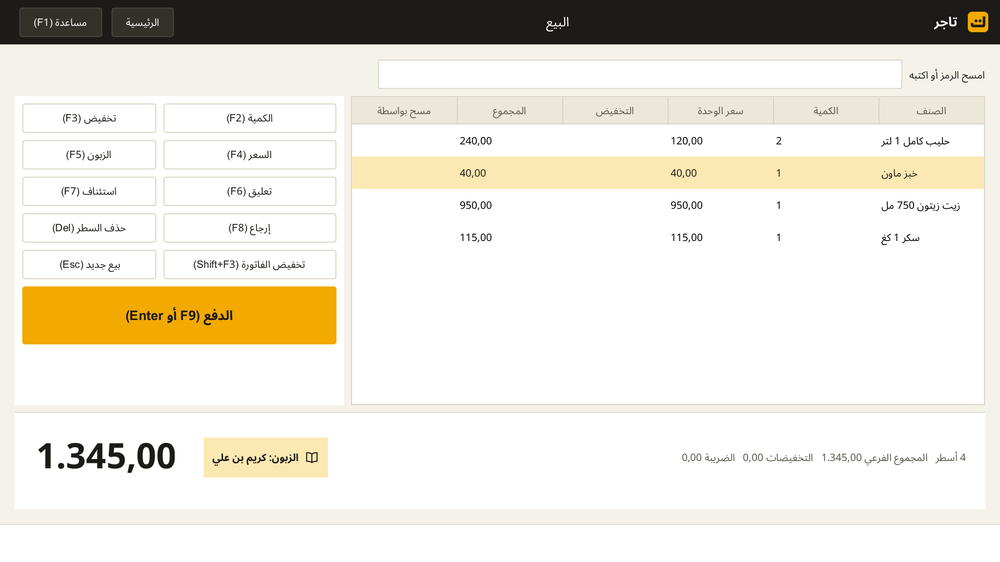
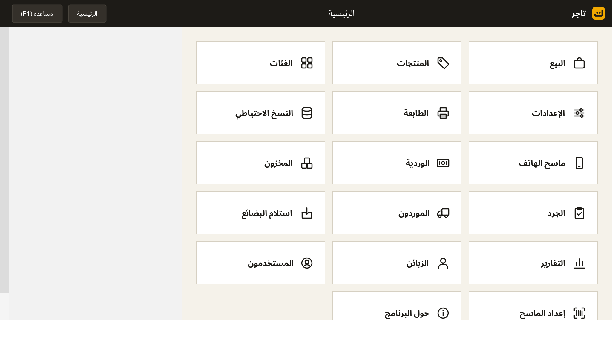

برنامج بيع ومخزون وديون لكل محل، يعمل بلا إنترنت.
البيع بالباركود، ودفتر الديون، والمخزون بتاريخ الصلاحية، والمشتريات، والتقارير، والنسخ الاحتياطي. على الحاسوب وعلى الهاتف، بالعربية والفرنسية والإنجليزية والإسبانية والإيطالية والألمانية.
نسخة تجريبية (Beta): للتجربة فقط، وقد تتغير البيانات بين النسخ. احتفظ بنسخة احتياطية.
التحميل v1.4.0-beta.1
لقطات



ما يقدمه
سريع عند الصندوق
مسح بالباركود بقارئ مخصص أو بكاميرا الهاتف، أزرار سريعة، وكل شيء بلوحة المفاتيح.
دفتر الديون
رصيد كل زبون، سقف دين، كشف حساب مطبوع، وإيصال عند كل تسديد. بلا فوائد.
المخزون بالصلاحية
دفعات بتواريخ صلاحية، منع بيع المنتهي، جرد، ومشتريات من الموردين.
يعمل بلا إنترنت
بياناتك في محلك فقط. لا سحابة ولا تتبع. عدة صناديق عبر الشبكة المحلية.
الهاتف كقارئ
اربط الهاتف بالحاسوب عبر شبكة المحل ليصبح قارئ باركود، أو استعمله صندوقًا مستقلًا.
وثائق نظامية
NIF وRC وNIS وAI على الإيصال والفاتورة، إغلاق يومي، وتقارير PDF.
المتطلبات
- حاسوب بويندوز 7 أو أحدث، ذاكرة 2 جيغابايت، أي معالج ثنائي النواة.
- طابعة إيصالات ESC/POS بعرض 58 أو 80 مم (اختياري).
- قارئ باركود USB أو كاميرا الهاتف (اختياري).
- هاتف أندرويد 5 أو أحدث (اختياري).
التثبيت
- شغّل ملف التثبيت واترك المجلد الافتراضي C:\RetailPOS (اسم بأحرف لاتينية).
- وافق على قاعدة جدار الحماية إن أردت ربط الهاتف.
- في أول تشغيل: اختر اللغة، أدخل بيانات المحل ورقمي NIF وRC، كلمة مرور النسخ الاحتياطي، والمدير.
التراخيص والمصدر
تاجر مبني على Floreant POS (ترخيص MRPL 1.2). كود الأجزاء المرخصة متاح عند الطلب حسب عرض المصدر.